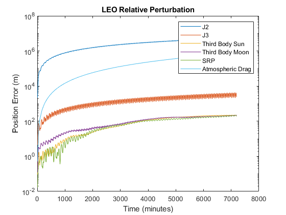
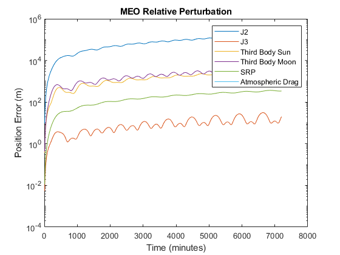
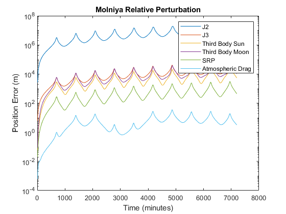

Task 1
Here is the code for task 1
Contents
Orbit 1 LEO
clear clc mu = 398600.4415; a = 6763; e = 0.001; i = deg2rad(50); raan = 0; argp = 0; ta = 0; tp = 2458910; % JD_utc [r,v] = oe2rv(mu,a,e,i,raan,ta,argp); y0 = [r; v]; time = tp:10/(24*60):tp+5; time = time * 86400; odeoptions = odeset('RelTol', 1e-10,'AbsTol',1e-20); [~,Yj2] = ode45(@j2prop,time,y0,odeoptions); [~,Ytb] = ode45(@twobody,time,y0,odeoptions); [~,Yj3] = ode45(@j3prop,time,y0,odeoptions); [~,Ytbs] = ode45(@threebodysun,time,y0,odeoptions); [~,Ytbm] = ode45(@threebodymoon,time,y0,odeoptions); [~,Ysrp] = ode45(@srpprop,time,y0,odeoptions); [~,Yd] = ode45(@atmdrag,time,y0,odeoptions); drj2 = zeros(length(time),1); drj3 = zeros(length(time),1); drtbs = zeros(length(time),1); drtbm = zeros(length(time),1); drsrp = zeros(length(time),1); drd = zeros(length(time),1); for i = 1:length(time) drj2(i) = norm(Yj2(i,1:3) - Ytb(i,1:3))*1000; % J2 Difference in meters drj3(i) = norm(Yj3(i,1:3) - Ytb(i,1:3))*1000; % J3 drtbs(i) = norm(Ytbs(i,1:3) - Ytb(i,1:3))*1000; % Third Body Sun drtbm(i) = norm(Ytbm(i,1:3) - Ytb(i,1:3))*1000; % Third Body Moon drsrp(i) = norm(Ysrp(i,1:3) - Ytb(i,1:3))*1000; % SRP drd(i) = norm(Yd(i,1:3) - Ytb(i,1:3))*1000; % Atmospheric Drag end figure(1) time = (time - tp.*86400)./60; semilogy(time, drj2) hold on semilogy(time, drj3) semilogy(time, drtbs) semilogy(time, drtbm) semilogy(time, drsrp) semilogy(time, drd) legend('J2','J3','Third Body Sun', 'Third Body Moon', 'SRP', 'Atmospheric Drag') ylabel('Position Error (m)') xlabel('Time (minutes)') title('LEO Relative Perturbation')
If given angle related to singularities, put in input 7 (argp).
Orbit 2 MEO
mu = 398600.4415; a = 26560; e = 0.001; i = deg2rad(55); raan = 0; argp = 0; ta = 0; [r,v] = oe2rv(mu,a,e,i,raan,ta,argp); y0 = [r; v]; time = tp:10/(24*60):tp+5; time = time * 86400; odeoptions = odeset('RelTol', 1e-10,'AbsTol',1e-20); [~,Yj2] = ode45(@j2prop,time,y0,odeoptions); [~,Ytb] = ode45(@twobody,time,y0,odeoptions); [~,Yj3] = ode45(@j3prop,time,y0,odeoptions); [~,Ytbs] = ode45(@threebodysun,time,y0,odeoptions); [~,Ytbm] = ode45(@threebodymoon,time,y0,odeoptions); [~,Ysrp] = ode45(@srpprop,time,y0,odeoptions); [~,Yd] = ode45(@atmdrag,time,y0,odeoptions); drj2 = zeros(length(time),1); drj3 = zeros(length(time),1); drtbs = zeros(length(time),1); drtbm = zeros(length(time),1); drsrp = zeros(length(time),1); drd = zeros(length(time),1); for i = 1:length(time) drj2(i) = norm(Yj2(i,1:3) - Ytb(i,1:3))*1000; % J2 Difference in meters drj3(i) = norm(Yj3(i,1:3) - Ytb(i,1:3))*1000; % J3 drtbs(i) = norm(Ytbs(i,1:3) - Ytb(i,1:3))*1000; % Third Body Sun drtbm(i) = norm(Ytbm(i,1:3) - Ytb(i,1:3))*1000; % Third Body Moon drsrp(i) = norm(Ysrp(i,1:3) - Ytb(i,1:3))*1000; % SRP drd(i) = norm(Yd(i,1:3) - Ytb(i,1:3))*1000; % Atmospheric Drag end figure(2) time = (time - tp.*86400)./60; semilogy(time, drj2) hold on semilogy(time, drj3) semilogy(time, drtbs) semilogy(time, drtbm) semilogy(time, drsrp) semilogy(time, drd) legend('J2','J3','Third Body Sun', 'Third Body Moon', 'SRP', 'Atmospheric Drag') ylabel('Position Error (m)') xlabel('Time (minutes)') title('MEO Relative Perturbation')
If given angle related to singularities, put in input 7 (argp).
Orbit 3 GEO
mu = 398600.4415; a = 42164; e = 0.01; i = deg2rad(0.5); raan = deg2rad(-120); argp = 0; [r,v] = oe2rv(mu,a,e,i,raan,ta,argp); y0 = [r; v]; time = tp:10/(24*60):tp+5; time = time * 86400; odeoptions = odeset('RelTol', 1e-10,'AbsTol',1e-20); [~,Yj2] = ode45(@j2prop,time,y0,odeoptions); [~,Ytb] = ode45(@twobody,time,y0,odeoptions); [~,Yj3] = ode45(@j3prop,time,y0,odeoptions); [~,Ytbs] = ode45(@threebodysun,time,y0,odeoptions); [~,Ytbm] = ode45(@threebodymoon,time,y0,odeoptions); [~,Ysrp] = ode45(@srpprop,time,y0,odeoptions); [~,Yd] = ode45(@atmdrag,time,y0,odeoptions); drj2 = zeros(length(time),1); drj3 = zeros(length(time),1); drtbs = zeros(length(time),1); drtbm = zeros(length(time),1); drsrp = zeros(length(time),1); drd = zeros(length(time),1); for i = 1:length(time) drj2(i) = norm(Yj2(i,1:3) - Ytb(i,1:3))*1000; % J2 Difference in meters drj3(i) = norm(Yj3(i,1:3) - Ytb(i,1:3))*1000; % J3 drtbs(i) = norm(Ytbs(i,1:3) - Ytb(i,1:3))*1000; % Third Body Sun drtbm(i) = norm(Ytbm(i,1:3) - Ytb(i,1:3))*1000; % Third Body Moon drsrp(i) = norm(Ysrp(i,1:3) - Ytb(i,1:3))*1000; % SRP drd(i) = norm(Yd(i,1:3) - Ytb(i,1:3))*1000; % Atmospheric Drag end figure(3) time = (time - tp.*86400)./60; semilogy(time, drj2) hold on semilogy(time, drj3) semilogy(time, drtbs) semilogy(time, drtbm) semilogy(time, drsrp) semilogy(time, drd) legend('J2','J3','Third Body Sun', 'Third Body Moon', 'SRP', 'Atmospheric Drag') ylabel('Position Error (m)') xlabel('Time (minutes)') title('GEO Relative Perturbation')
If given angle related to singularities, put in input 7 (argp).

Obrit 4 Molniya
mu = 398600.4415; a = 26000; e = 0.72; i = deg2rad(75); raan = deg2rad(90); argp = deg2rad(-90); [r,v] = oe2rv(mu,a,e,i,raan,ta,argp); y0 = [r; v]; time = tp:10/(24*60):tp+5; time = time * 86400; odeoptions = odeset('RelTol', 1e-10,'AbsTol',1e-20); [~,Yj2] = ode45(@j2prop,time,y0,odeoptions); [~,Ytb] = ode45(@twobody,time,y0,odeoptions); [~,Yj3] = ode45(@j3prop,time,y0,odeoptions); [~,Ytbs] = ode45(@threebodysun,time,y0,odeoptions); [~,Ytbm] = ode45(@threebodymoon,time,y0,odeoptions); [~,Ysrp] = ode45(@srpprop,time,y0,odeoptions); [T,Yd] = ode45(@atmdrag,time,y0,odeoptions); drj2 = zeros(length(time),1); drj3 = zeros(length(time),1); drtbs = zeros(length(time),1); drtbm = zeros(length(time),1); drsrp = zeros(length(time),1); drd = zeros(length(time),1); for i = 1:length(time) drj2(i) = norm(Yj2(i,1:3) - Ytb(i,1:3))*1000; % J2 Difference in meters drj3(i) = norm(Yj3(i,1:3) - Ytb(i,1:3))*1000; % J3 drtbs(i) = norm(Ytbs(i,1:3) - Ytb(i,1:3))*1000; % Third Body Sun drtbm(i) = norm(Ytbm(i,1:3) - Ytb(i,1:3))*1000; % Third Body Moon drsrp(i) = norm(Ysrp(i,1:3) - Ytb(i,1:3))*1000; % SRP drd(i) = norm(Yd(i,1:3) - Ytb(i,1:3))*1000; % Atmospheric Drag end figure(4) time = (time - tp.*86400)./60; semilogy(time, drj2) hold on semilogy(time, drj3) semilogy(time, drtbs) semilogy(time, drtbm) semilogy(time, drsrp) semilogy(time, drd) legend('J2','J3','Third Body Sun', 'Third Body Moon', 'SRP', 'Atmospheric Drag') ylabel('Position Error (m)') xlabel('Time (minutes)') title('Molniya Relative Perturbation')
If given angle related to singularities, put in input 7 (argp).